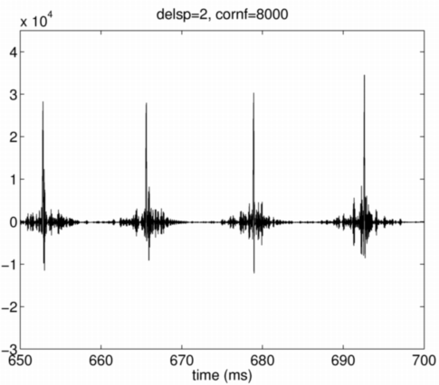
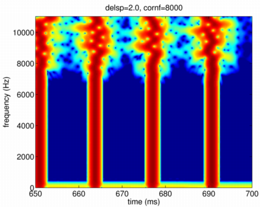

| | | 群遅延変動の遷移周波数：groupDelayRandomizeCornerFrequency | Contents | Index |
この制御パラメタの既定値は4000Hzとしてあります。 この制御パラメタは、群遅延がランダムに変動する領域と 群遅延が一定である領域との境界の周波数を設定します。
ここでも前の節と同じ例を用い、同じ前提条件が成立しているものとして 説明を進めます。 以下の命令を実行することにより、構造体のフィールドgroupDelayRandomizeCornerFrequency の遷移周波数が8000Hzに設定され、駆動信号が作成されます。 なお、ここでは、結果を見易くするため、群遅延変動の標準偏差を2msとしました。
prminS.groupDelayStandardDeviation=2; prminS.groupDelayRandomizeCornerFrequency=8000; sy8000 = exstraightsynth(f0raw,n3sgram*0+100,ap*0-80,fs,prminS);
波形は、遷移周波数が4000Hzの場合と比較すると、ややピークが鋭くなったかと 思える程度で、違いはそれほど明らかではありません。

しかし、サウンドスペクトログラムを見ると、意図した通りに 8000Hz以上でだけエネルギーが時間方向に拡散していることが分かります。

| | | 群遅延変動の遷移周波数：groupDelayRandomizeCornerFrequency | Contents | Index |